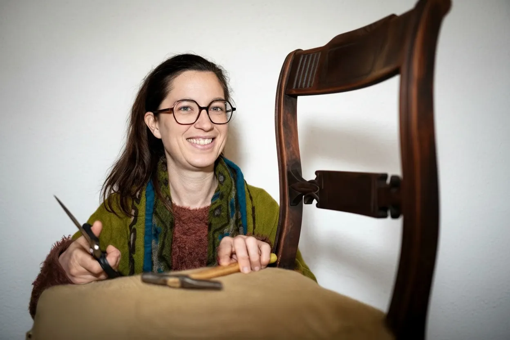
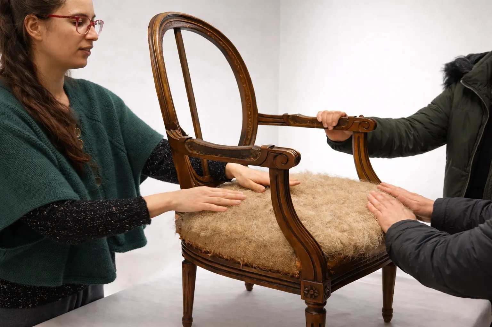
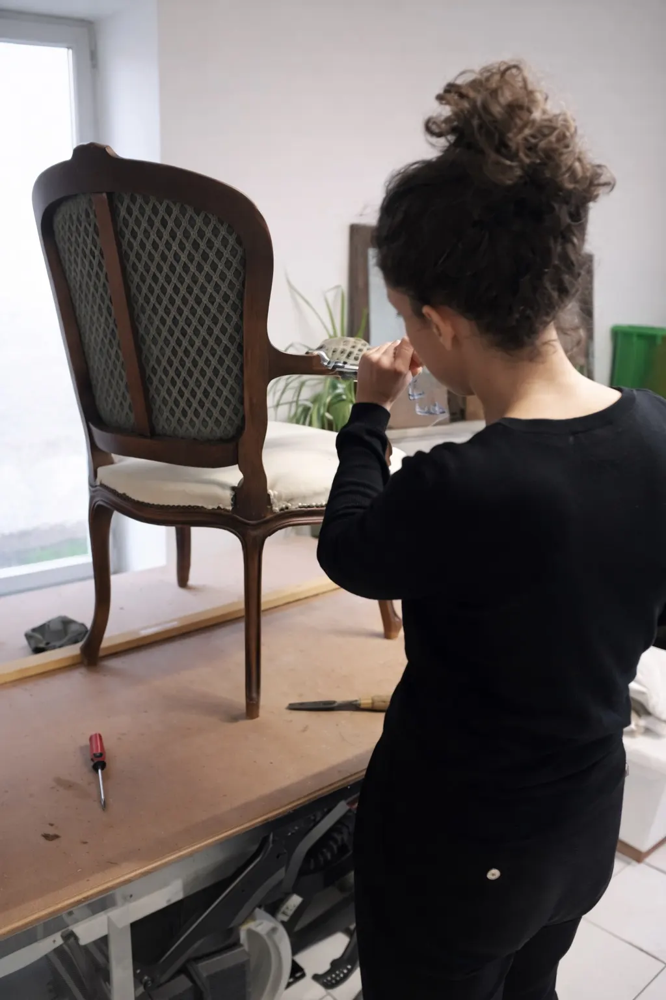
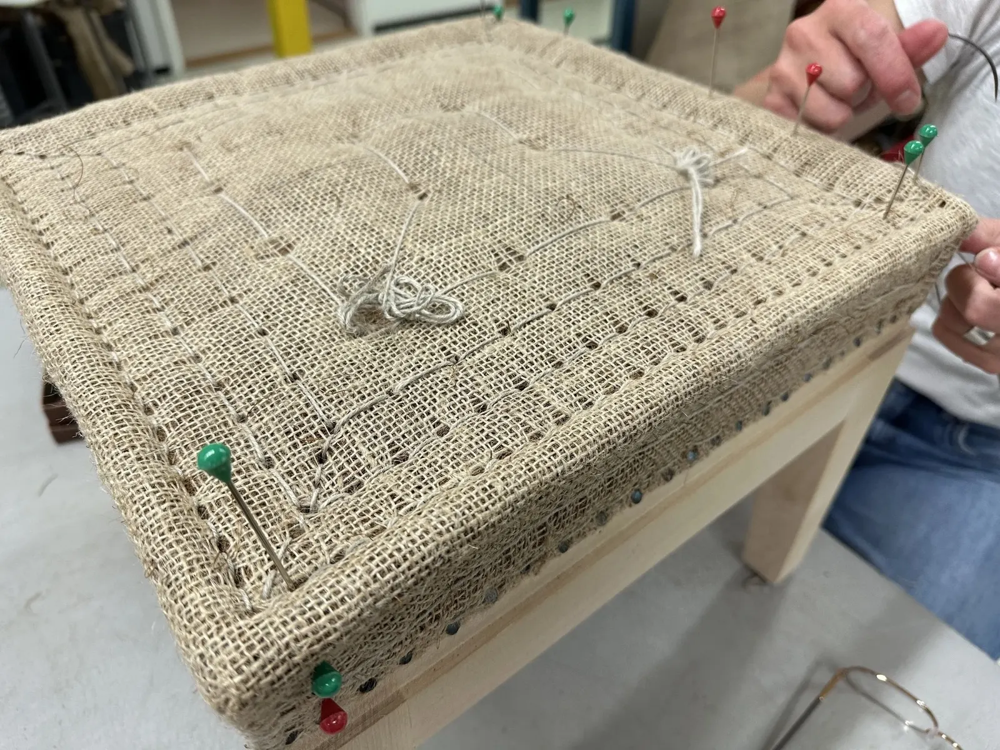
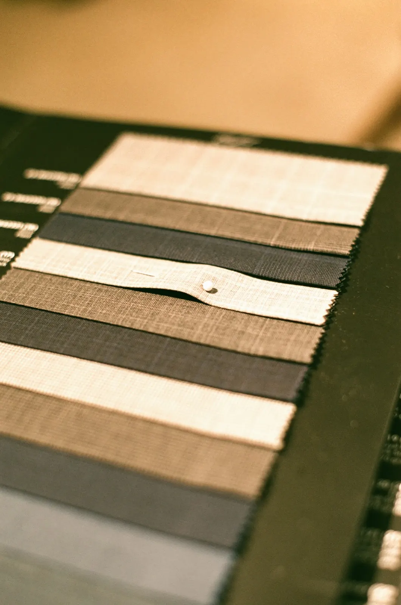
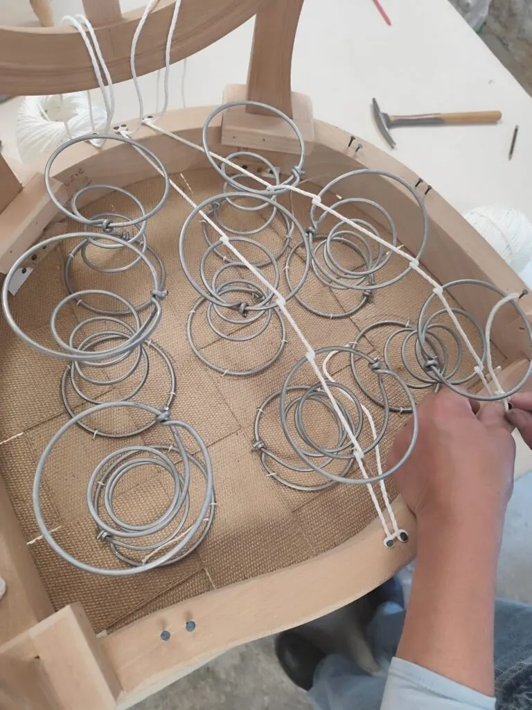
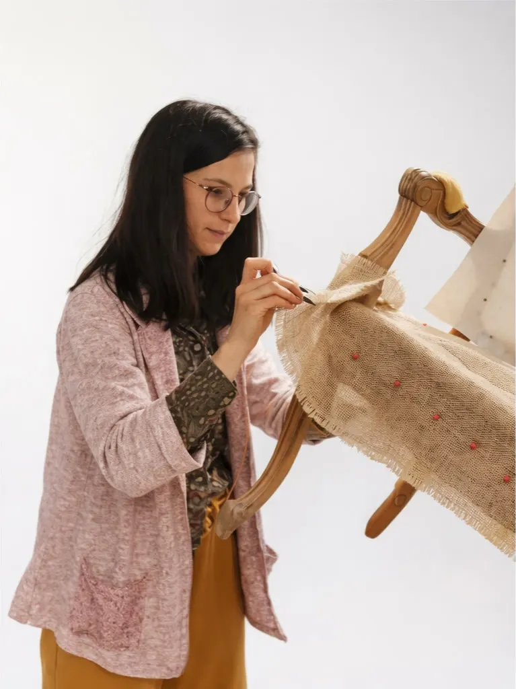

Sara Mesnard, tapissière à Saint-Martin-l'Ars
Vos fauteuils, votre histoire, mon expertise.
Je redonne vie à vos chaises et fauteuils en alliant authenticité, confort et modernité. Forte de plus de 10 ans d'expérience, je transmets aussi mon savoir-faire dans des ateliers éco-responsables.
Ou par e-mail : tisseenlair@gmail.com

- Plus de 10 ans d'expérience
- Saint-Martin-l'Ars, sud Vienne
- Traditionnelle ou semi-traditionnelle
- Tissus d'éditeurs haut de gamme

Les mains sur le crin
Ateliers éco‑responsables : restaurez vos sièges vous-même.
Que vous soyez futur artisan ou amateur de savoir-faire artisanal, j'organise des ateliers où vous apprenez à rénover vos fauteuils de vos propres mains.
Méthode traditionnelle ou semi-traditionnelle : je vous guide pas à pas, et vous repartez avec un siège unique, créé par vous.
- Travaillez à votre rythme, en solo ou en petit groupe
- Une expérience ludique, où le plaisir prime
- Redonnez vie, confort et caractère à vos meubles
- Un geste éco-responsable
Chez moi, chez vous ou dans vos locaux.
Pour le cours à l'atelier, venez en tenue de travail et chaussures fermées, avec votre chaise ou votre fauteuil à rénover : installation à 9 h, atelier de 9 h 30 à 16 h 30.
-
Cours particulier à l'atelier
À Saint-Martin-l'Ars, 6 heures, deux personnes au maximum. Les bases de la tapisserie et la rénovation de votre siège, guidé pas à pas.
Tarif et dates -
Atelier chez vous
Pour les particuliers, chez vous ou dans un lieu partenaire, groupe conseillé de 3 à 6 personnes. Cycle de 3 à 5 séances sur devis, tarif dégressif.
Grille de tarif -
Collectivités
Centres sociaux, recycleries, associations, mairies, MJC : j'interviens directement dans vos structures.
Me consulter -
Entreprises
Événementiel, team building, animation et formation professionnelle, jusqu'à 8 participants.
70 € par personne, la journée
Ateliers itinérants : frais de déplacement de 0,50 € par kilomètre, calculés sur l'aller-retour.
Redonnez vie à vos fauteuils.
Fauteuils, chaises ou canapés, classiques, contemporains ou design : je leur offre une seconde jeunesse avec des tissus d'éditeurs haut de gamme et un savoir-faire artisanal.



Sièges anciens
Je remets en état les ressorts, les sangles et le crin, pour un style authentique et une solidité durable.
Sièges modernes
Mousse et techniques contemporaines, pour un confort immédiat et adapté aux assises actuelles.
Les finitions
Une touche classique ou moderne : clous, passepoils, galons ou franges.
Des photos pour commencer
Quelques photos de votre siège, sous différents angles.
Un devis estimatif rapide
Une première estimation, établie à partir de vos photos.
Le choix du tissu ensemble
Parmi un large choix d'éditeurs reconnus.
La restauration commence
Ressorts, sangles et crin, ou mousse, selon votre siège.
Votre satisfaction avant tout
Les finitions font toute la différence.
Votre devis estimatif est gratuit.
De Poitiers à Angoulême, en passant par Civray, Montmorillon ou Confolens.
Mon atelier est installé à Saint-Martin-l'Ars, au cœur du sud Vienne, à 45 minutes de Poitiers et tout près de la Charente et de la Haute-Vienne. J'interviens dans toute la région Poitou-Charentes.
Pour les entreprises : une formation en tapisserie traditionnelle.
Pour développer les compétences de vos collaborateurs ou préserver un savoir-faire artisanal d'excellence, j'enseigne la réfection de sièges en traditionnelle, étape par étape.
- Sanglage
- Guindage
- Mise en crin
- Piqûre
- Mise en blanc
- Couverture
- Finitions

Envoyez-moi une photo de votre siège.
Pour un devis de rénovation, un atelier chez vous ou une question sur un tissu, appelez-moi ou écrivez-moi.
- Téléphone
- 06 03 17 93 51
- tisseenlair@gmail.com
- Atelier
- 5 lieu-dit La Brunelière
86350 Saint-Martin-l'Ars - Ateliers
- 9 h installation, 9 h 30 à 16 h 30